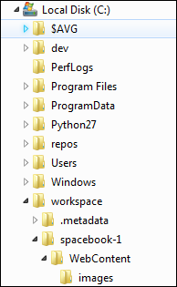
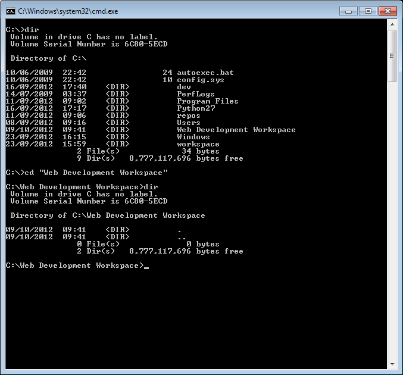

Objectives
Review the spacebook-semantic project from an earlier lab. Become familiar with the Command Prompt. Install 2 new programming environments: a Web Framework called Play and an Integrated Development Environment called Eclipse.
Command Prompt
Open a command prompt on Windows.
On Windows 8 and 10, access the desktop from the home screen, and run File Explorer (may be in the toolbar). Then select File->Open Command Prompt:

Command Line
This is an alternative interface to Windows which it is important to become familiar with. In this window you can type what are sometimes called 'DOS' commands. These commands let you have a finer level of control of your PC, and are particularly important for programmers to master.
Here are some simple commands:
- dir
- list all files in a directory
- cd ..
- change to a parent directory
- cd \
- change to a specific directory
It is essential that you become adept at these commands, and a few others.
Bear in mind that these commands always have a 'current directory' in mind (a directory is another name for a folder). Try them now and see if you can 'navigate' to your web development workspace. For instance, if the folder is located as shown here:

Then the commands to get there will look like this:

If your workspace is located on another drive, the enter that drive letter first - say "G:", press return, and then try the cd and dir commands.
Note in all of the above that the 'prompt' in the command window is always showing the 'current' drive/directory.
Also, if you have a 'space' in your directory (a bad idea generally), then you will have to use quotation marks in the commands. Here is an example:

See in the above transcript that the directory name is "Web Development Workspace" - and it has been enclosed in double quotes.
In general, however, it is best to adopt the following conventions.
Never use spaces in directory or file names
Never use upper case in directory or file names
If you wish to use readable multiple words for a directory or file name, separate the words with '-'. e.g.
- web-development
- java-projects
Perhaps you might take this opportunity to adjust your workspace and projects to adopt the above conventions. If you do, then you will find that using DOS commands to navigate your folders will be considerably easier.
Before going on to the next step, make sure you are comfortable navigating in DOS around the file system, and in particular make sure you can navigate to your web development workspace.
Install Git
Install git for your platform:
Accept all the default options if they are presented (usually just for Windows).
If the installation succeeded, then verify the version. Do this by opening a shell (command prompt on Windows) and enter the following:
git --versionInstall Eclipse
To date we have been using Sublime Text as our primary editor. While we can continue to use it, we will supplement our tool set with a professional Java Integrated Development Environment (IDE) called Eclipse:
Select 'Eclipse Neon' - and during the install be sure to select "Eclipse for EE Developers"
Make sure you can launch eclipse successfully. When launching, keep an eye on the location of the 'workspace':
You can change this to suit your tastes.
Installing and Running Play
Windows
Visit the following site:
In particular, vist the download page:
On the this page, select and download play-1.4.4.zip (the version number is very important)
Unzip to somewhere on your PC - a good location might be:
C:\devOnce you have unzipped it, the folder might look like this:
In the above, the play archive has been downloaded and expanded in c:\dev
See if you can put the folder is on your path. Detailed setup instructions are here for platforms other than Windows:
Here is a shortened guide which may suffice:
Mac/linux Users
Create or edit a file called .bash_profile in your home directory and set the path to include the extracted archive on the path. It might look like this:
PATH=$PATH:\
$HOME/dev/play-1.4.4
export PATHThis assumes you extracted the play archive into the dev folder.
Windows
For Windows machine, you need to do the following:
Locate the "Computer" icon in explorer

Right click on this and select 'Properties':

Select 'Advanced System Settings':

Select 'Environment Variables':
Under "System Variables", locate and select the 'Path' entry:
Edit this entry, and append the path in which play is installed. This could be C:\dev\play-1.4.4 in the above example.
NB: DO NOT DELETE ANY OF THE CURRENT VALUES OF THE PATH!
Press "Ok" all the way back and rerun the command prompt (close the one already open).
To test, just type "play" from a command prompt you should see something like this:
~ _ _
~ _ __ | | __ _ _ _| |
~ | '_ \| |/ _' | || |_|
~ | __/|_|\____|\__ (_)
~ |_| |__/
~
~ play! 1.4.4, http://www.playframework.org
~
~ Usage: play cmd [app_path] [--options]
~
~ with, new Create a new application
~ run Run the application in the current shell
~ help Show play helpOr, if you did not manage to get the play folder on the path, then this command here should work (if you used the recommended folder structure)
C:\dev\play1-1.4.4\playHowever, it is best to ensure that the play command is on the system path.
Create a Play/Eclipse Project
Back in the command line, change to a directory where you keep your web development projects.
play new playdemoYou should get:
~ _ _
~ _ __ | | __ _ _ _| |
~ | '_ \| |/ _' | || |_|
~ | __/|_|\____|\__ (_)
~ |_| |__/
~
~ play! 1.4.4, http://www.playframework.org
~
~ The new application will be created in /Users/edeleastar/Dropbox/webdev/2012/dev/projects/spacebook
~ What is the application name? [spacebook]Press return when prompted for the name to accept the default (playdemo)
~
~ OK, the application is created.
~ Start it with : play run playdemo
~ Have fun!
~In DOS it might look like this:
Explore the generated folder - called 'playdemo'. It should contain six folders
- app
- conf
- lib
- public
- test
We can import this project into eclipse. First, change into the playdemo folder
cd playdemoThen run this command:
play eclipsifyThe system will respond with:
~ _ _
~ _ __ | | __ _ _ _| |
~ | '_ \| |/ _' | || |_|
~ | __/|_|\____|\__ (_)
~ |_| |__/
~
~ play! 1.4.4, http://www.playframework.org
~
~ OK, the application is ready for eclipse
~ Use File/Import/General/Existing project to import /Users/edeleastar/Dropbox/webdev/2012/dev/projects/spacebook into eclipse
~
~ Use eclipsify again when you want to update eclipse configuration files.
~ However, it's often better to delete and re-import the project into your workspace since eclipse keeps dirty caches...
~The above sequence might look like this in DOS:
Now, launch eclipse. In eclipse, select "File->Open Projects from File System..." and navigate to the folder containing the application just generated.
Be sure to select the 'playdemo' only as shown above (deselect the second one).
Once imported into eclipse, the project should look like this:
Running a Play Application
Back in the shell, from inside the playdemo folder, type the following command:
play runPlay will respond with something like this:
~ _ _
~ _ __ | | __ _ _ _| |
~ | '_ \| |/ _' | || |_|
~ | __/|_|\____|\__ (_)
~ |_| |__/
~
~ play! 1.4.4, http://www.playframework.org
~
~ Ctrl+C to stop
~
Listening for transport dt_socket at address: 8000
16:30:33,586 INFO ~ Starting /Users/edeleastar/Dropbox/webdev/2012/dev/projects/spacebook
16:30:34,646 WARN ~ You're running Play! in DEV mode
16:30:34,894 INFO ~ Listening for HTTP on port 9000 (Waiting a first request to start) ...
16:30:58,912 INFO ~ Application 'Spacebook' is now started !You may get a dialog from the firewall, asking for permission to run, which you should agree to.
Now run the browser, and navigate to:
you should see something like this:

Also notice that a log message will appear in the command window indicating that the app has started:
16:30:58,912 INFO ~ Application 'playdemo' is now started !To stop the application, press "Control+C" in the command prompt. If you refresh the browser window, then you should now get an error
Start the app again by typing 'play run' as above. Verify that the app has started by browsing/refreshing to:
Try this a few times to get used to starting/stopping the application